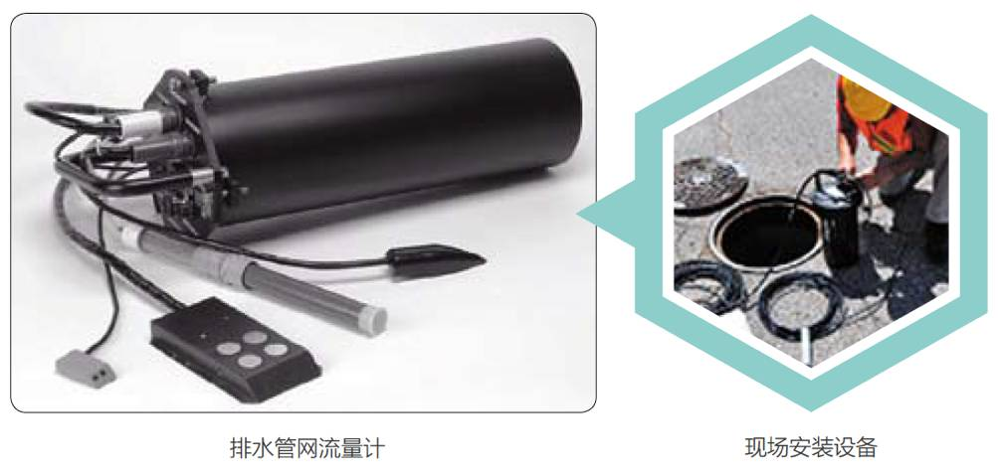
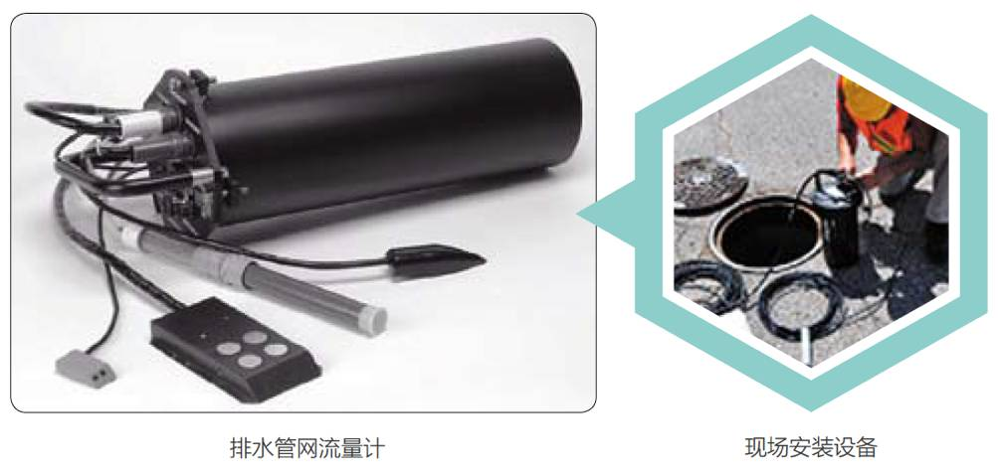
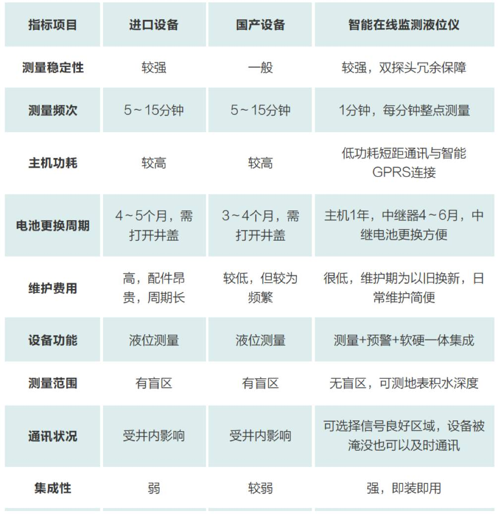
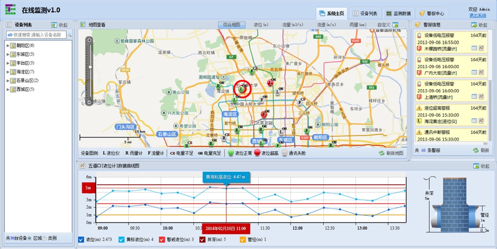
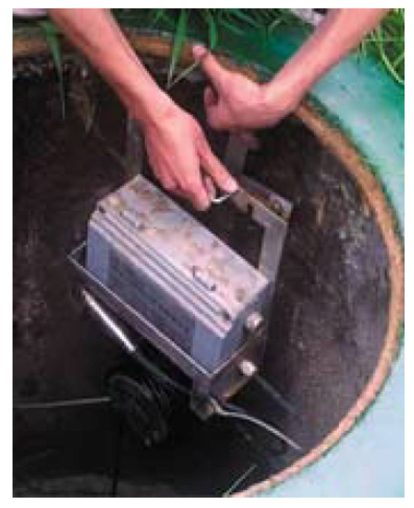
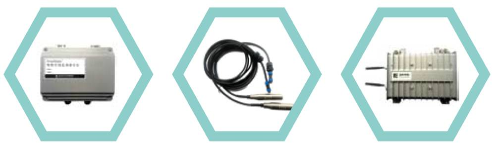
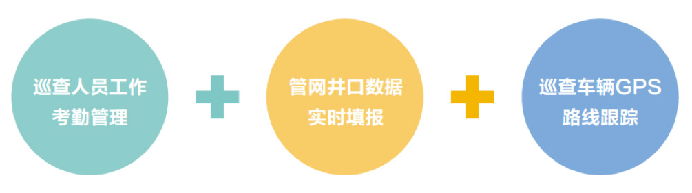

-
Flow monitoring system
多用途排水管网流量监测系统多用途排水管网流量监测系统，可用于生活污水，合流污水或雨水管网的流量监测。其流量监测设备的兼容性和通用性对于数据采集系统来说已达到最佳。该流量监测系统可用于单管或并行双管，并取得了最高级别的本质安全认证。
该产品集成了多种流量监测技术，几乎涵盖了目前所有可应用于污水监测的传感器技术，是现今市场上通用性最强，性价比最佳的集成多种技术的流量监测产品。
多用途排水管网流量监测系统已成功应用于中国20余个城市的监测环境，实践表明该系统在实用性、稳定性、精确性方面具有国际领先水平。
应用领域
 

性能指标
系统解决方案
● 城市雨污水管网液位在线监测平台
● 城市降雨易涝点在线监测和预警平台
● 城市排水管网溢流点监测和报警平台
● 城市排水内涝监测预警公众信息发布平台
● 城市区域地下停车场淹水及报警系统
Smart level meter
SmartWater 智能在线监测液位仪 ● 新一代智能互联网排水在线监测与内涝预警的专业仪表
● 雨水、污水、合流制管网，城市河渠，城市易涝区的监测预警
● 分钟级稳定持续监测，超警戒信息全方位实时推送
● 时钟自动同步，管网液位状态同步测量
● 高性价比、易安装、易维护，防潮防水防爆
性能指标
● 测量与发送频次：1分钟1次测量。通常状态下以15分钟1次的发送数据；在水位超过预警值后，5分钟1次发送；在水位超过报警值后，提高到1分钟发送1次。并在首次超过报警水位时，进行短信报警。
● 本地存储：系统在本地缓存300天以上的数据。在出现通信故障期间所缓存的数据将在通信恢复后将自动上传。
● 量程与精度：3、5、10米等可选量程，测量准确度优于全量程的1%，在超过报警水位后，测量准确度不低于2cm。
● 通讯距离：系统在本地缓存300天以上的数据。在出现通信故障期间所缓存的数据将在通信恢复后将自动上传。
● 电池工作与维护时间：主机电池工作时间为1年以上，中继电池工作时间4个月以上（取决于GPRS网络状况及传输频次）。
● 安装维护：井下安装简单，提供标准的安装附件；井外设备维护和电池更换方便。
Portable detector
三防拉杆式便携检测箱三防拉杆式工具箱配置多种便携式检测监测仪器，可以快速、高效完成住建部城市排水防涝设施普查工作中要求的水质数据的检测，并有效保障巡查、养护人员的人身安全。
应用领域
技术特点
● 多种设备组合
● 能够检测多种气体
● 能够检测多种水质指标
技术参数
● 产品颜色：黑色
● 箱体材质：PU塑料
● 尺寸：75cm×25cm×50cm